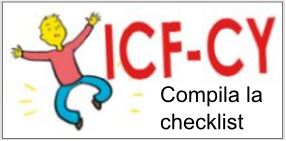
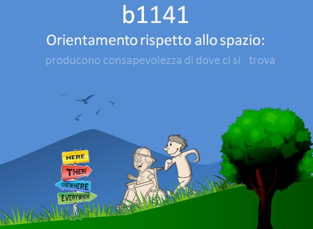
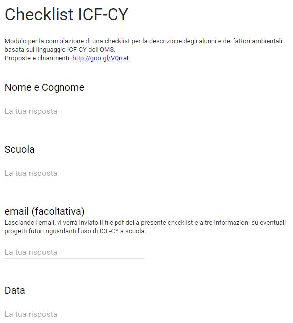
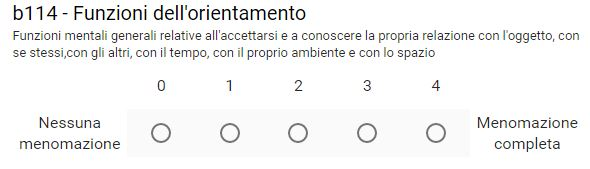

ICF-CY
Risorse per creare una checklist per la descrizione degli alunni secondo i codici ICF-CY
Link per visualizzare il materiale del modulo sull'ICF-CY.
- Testo ICF-CY in inglese
- Slides del corso ICF, parte I
- Slides del corso ICF, parte II
- Lezione II
- Pagina accedere al materiale del corso
- 
- Versione pdf della checklist ICF-Cy per la compilazione manuale
- Sito in cui trovare tutti i codici ICF
Facciamo un esempio...
Nel nostro esempio, tratto dal testo di Ianes e Cramerotti "Usare L'ICF nella scuola, supponiamo di voler descrivere ciò che è importante per un alunno delle superiori che si sposta agevolmente con l'ausilio della sedia a rotelle e che affronta un periodo di stage. Ricordiamo che a noi interessa valutare le performace e le competenze dell'alunno e che queste si misurano solo all'interno dei contesti in "situazione".
Il codice per descrivere la sedia a rotelle è e1201
- e = fattori ambientali (e=environment=ambiente)
- 1 è il capitolo 1: prodotti e tecnologia
- 20 = trasporto
- 1 = trasporto per l'assistenza
È un facilitatore?
Si, grazie alla sua abilità nell'usarla, la sedia a rotelle lo rende indipendente negli spostamenti. Il qualificatore da applicare al codice è +4. Si tratta quindi di un facilitatore completo.
e1201+4
Ricordiamo che i codici non hanno senso senza i qualificatori.
Gli stage
L'alunno ha partecipato a due stage a scuola. Nel primo il lavoro era ripetitivo, per cui l'esperienza non è stata positiva, mentre nel secondo la situazione si è capovolta, in positivo.
Analizziamone i motivi:
- L'alunno poteva spostarsi liberamente e in maniera autonoma
- L'alunno si è mostrato attivo e interessato
- Il lavoro era stimolante (smistare e distribuire la posta)
- L'ambiente era accogliente (atteggiamenti facilitatori)
Da queste osservazioni sintetiche si può notare intuire come le caratteristiche personali e l'atteggiamento delle persone che fanno parte del contesto lavorativo abbiano interagito tra loro creando un'esperienza positiva, al contrario della prima esperienza (caratterizzata, invece, da un lavoro ripetitivo e da pochi contatti con il personale).
Per descrivere questa situazione con ICF, possiamo usare il codice d840. Si tratta, infatti, di un attività di partecipazione sociale riconducibile alla categoria "d840 apprendistato: impegnarsi in programmi correlati alla preparazione per il lavoro, come svolgere compiti richiesti in un apprendistato, un tirocinio, un contratto di formazione".
- D - attività e partecipazione
- 8 - Aree di vita principali
- 40 - Apprendistato (addestramento al lavoro)
- .0 (nessuna difficoltà)
Dato che non ha avuto nessuna difficoltà, la perfomance avrà il qualificatore 0
d840.0
Vediamo quali sono le funzioni implicate nel compito:-

- Orientamento:
- b1140 - Orientamento nel tempo
- Producono la consapevolezza del giorno, data, mese, anno
- b1141 - Orientamento nello spazio
- producono la consapevolezza di dove ci si trova
Funzioni mentali specifiche
Funzioni dell'attenzione
- b1 40 0 - mantenimento dell'attenzione
- producono concentrazione per il periodo necessario
- b1 40 1 - spostamento dell'attenzione
- permettono di rifocalizzare la concentrazione da uno stimolo all'altro
- b1 40 2 - distribuzione dell'attenzione
- permettono di focalizzarsi su uno o più stimoli contemporaneamente
Il modul online
Si può compilare il modulo online al seguente indirizzo: Checklist onlineVedrete una pagina iniziale in cui inserire i vostri dati
Cliccando sul tasto avanti vi troverete nella pagina per compilare i codici delle funzioni corporee
Oltre all'attenzione, per l'attività di smistare e distribuire la posta sono necessarie le funzioni (b1470) del controllo psicomotorio (rapidità delle reazioni) e la (b1471) qualità delle funzioni psicomotorie (coordinamento)
- b1470
- Funzioni del controllo psicomotorio
- b1471
- Funzioni della qualità delle funzioni psicomotorie
Per smistare la posta e ricevere gli ordini sono necessarie le funzioni della percezione uditiva (b1560) e visiva (b1561).
- b1560
- Funzioni della percezione uditiva
- b1561
- Funzioni della percezione visiva
Possono, inoltre, verificarsi delle situazioni non previste per le quali sono implicate funzioni cognitive di livello superiore (b1641, b1642 e b1643: organizzazione e pianificazione, flessibilità, soluzione di problemi)
Questo tipo di lavoro, poi, necessita di continui rapporti con altre persone, per cui sono necessarie le funzioni del linguaggio b1670 "recepire il linguaggio" e b1671 "espressione del linguaggio".
- b1670
- recepire il linguaggio
- b1671
- espressione del linguaggio